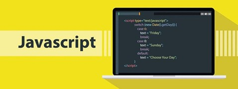

Js
Funcionalidad y Dinamismo(JavaScript)
JavaScript es un lenguaje de programación que permite a los desarrolladores crear páginas web interactivas y dinámicas. Puede utilizarse para crear animaciones, juegos y todo tipo de aplicaciones interesantes en la web. Es un lenguaje de programación que existe desde hace más de veinte años, pero sigue ganando popularidad a medida que más gente se da cuenta de sus casos de uso y se multiplican los frameworks de su ecosistema para seguir expandiendo su funcionalidad.
Se dice que JavaScript es el lenguaje de programación de la Web porque es esencialmente lo que hace que todos los sitios web sean interactivos. JavaScript puede utilizarse para hacer todo tipo de cosas, como crear animaciones y juegos en un sitio web o reproducir efectos de sonido cuando alguien interactúa con una página.
Para poder introducir código JavaScript en una web existen diferentes alternativas:
- Embebido en el código HTML
- Utilizando un archivo externo
- En los elementos HTML
En este caso el código del script debe encerrarse entre etiquetas HTML < script >
Esta alternativa se apoya en un archivo de texto plano que se incluye en la cabera del documento web.
Normalmente se utiliza para realizar llamadas a funciones JavaScript, por ejemplo, para el control de campos de formularios.